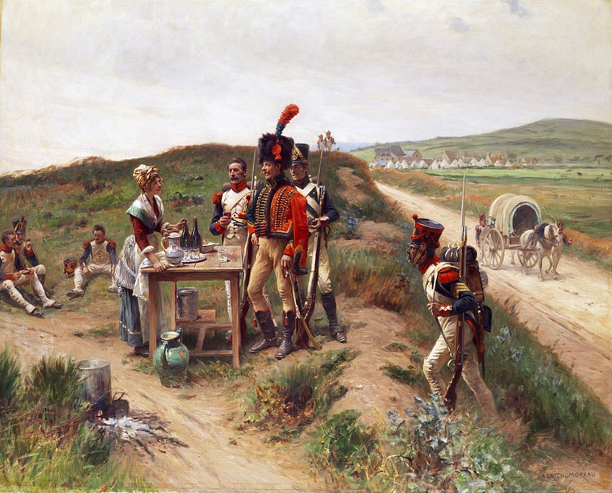
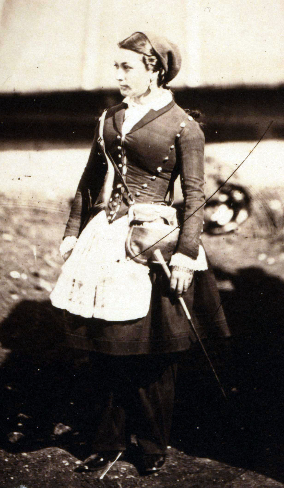
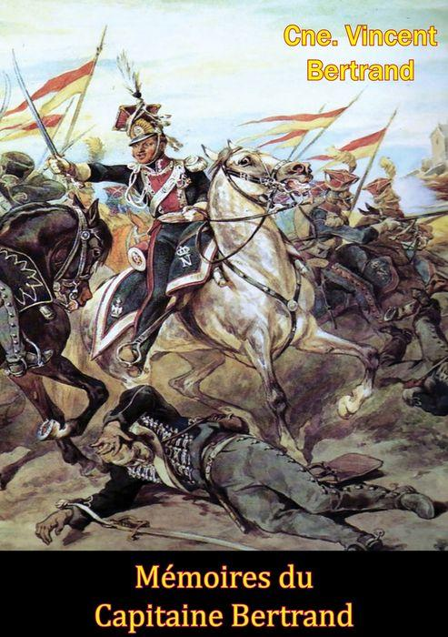
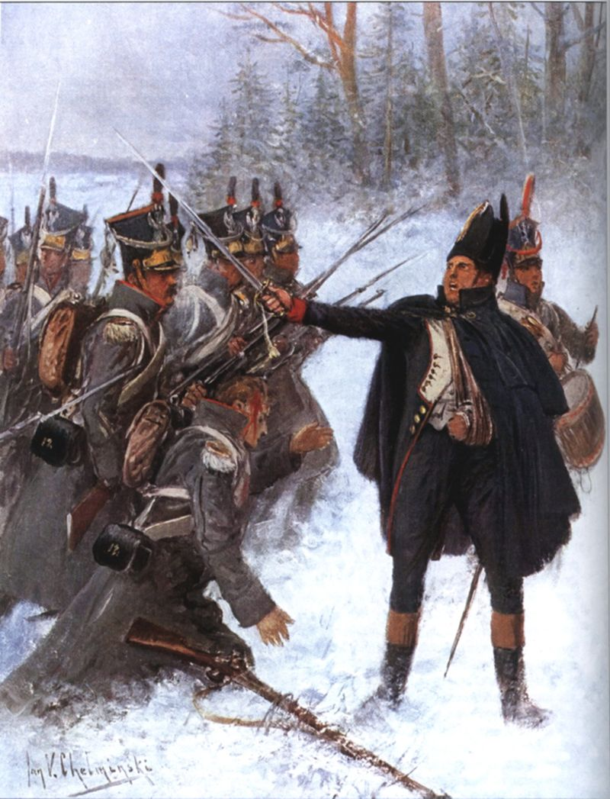

베레지나의 동과 서 - 러시아군의 등장
게시: 2021-09-27T06:30:24+09:00
베레지나 강 위에 놓인 2개의 다리는 결코 근대 공학의 금자탑 같은 것이 아니었습니다. 워낙 단시간에 날림으로 만든 것이라서 이미 언급한 것처럼 가끔씩 일부 구간이 무너져 끊어지기도 했지만, 무너지지는 않더라도 일부 구간은 축 늘어져서 상판이 강물에 약간 잠긴, 부분 잠수교가 되기도 했습니다. 어떻게 생각하면 이렇게 위태위태한 다리가 유일한 퇴각로라면 서로 먼저 가겠다고 난리가 날 것 같지만 26일 밤 ~ 27일 저녁까지 베레지나 양안은 매우 평온했고 질서정연한 도강이 이루어졌습니다. 간헐적으로 다리 일부 구간이 무너지거나 엉성한 상판 통나무 사이에 말 다리가 끼어 부러지는 등의 사고가 발생하여 교통 체증도 일어났는데도 그랬습니다. 이런 질서는 나폴레옹의 존재 때문에 가능한 것이었습니다. 아무리 욕을 먹어도 나폴레옹은 나폴레옹이라고, 국적이 네덜란드인이건 스위스인이건 나폴레옹이 자신들과 함께 현장에 있다는 사실만으로 대부분의 병사들은 자신감과 함께 안도감을 느꼈습니다. 나폴레옹이 여기 있는데 설마 별일이야 있겠는가, 나폴레옹이 뭔가 판을 짜놓았겠지 하는 생각들이었는데, 이건 세기의 영웅에 대한 신뢰가 있었기 때문에 가능한 일이었습니다. 이런 맹목에 가까운 믿음은 베레지나까지 오는 고통의 후툇길 내내 이어졌습니다. 가령 나폴레옹의 시종들이 저녁에 지쳐 널브러진 병사들 사이를 다니며 '폐하의 텐트 옆에 피울 땔감을 구하고 있다'라고 말하면, 부상병까지도 자청하여 자신이 깔고 누웠던 짚단을 내주기도 했습니다. 물론 언제나 그런 것은 아니었고, 시종들은 눈치가 빠른 사람들이라서 병사들의 분위기가 험악할 경우엔 아무 소리 안하고 그냥 조용히 지나쳤다고 합니다. 26일 밤 ~ 27일 새벽까지 그랑다르메는 순조롭게 도강을 계속 했고, 근위대와 나폴레옹은 새벽에 다리를 건넜습니다. 그 다음으로 다부의 제1군단, 네의 제3군단, 뮈라의 예비대가 차례로 도강했고, 27일 저녁 무렵에야 외젠의 제4군단이 건널 수 있었습니다. 특히 네의 제3군단, 외젠의 제4군단은 각각 천여 명 수준으로 줄어든 상황이었는데도 이렇게 도강에 시간이 오래 걸린 것은 가끔씩 다리가 무너지거나 마차나 말 다리가 걸려 정체가 일어났기 때문이었습니다. 그럼에도 불구하고 대부분의 대포와 탄약 수송차, 각 대대의 짐마차들은 무사히 다리를 건넜고 장교들의 개인 마차들도 깜짝 놀랄 만큼 많은 수가 다리를 건넜습니다. 나폴레옹이 모스크바에서 챙긴 여러가지 전리품을 실은 마차들도 다 다리를 건넜으며, 모스크바 연예계에서 활동하던 퓌질(Madame Fusil)이라는 이름의 여배우도 베시에르 원수의 마차에 탑승한 채 아주 안락하게 다리를 건널 수 있었습니다. 낙오병들과 부상병들, 종군 상인, 모스크바에서 탈출한 프랑스인 등 민간인들의 무리는 11월 27일 오후부터 본격적으로 베레지나 동쪽 강변에 모여들기 시작했는데, 정규 부대부터 다리를 건너야 한다는 나폴레옹의 지시에 따라 헌병들이 이들은 다리 입구 주변에 접근하지 못하도록 밀어냈습니다만, 이들조차도 별로 초조해하거나 먼저 건너겠다고 안달을 하지는 않았습니다. 심지어, 27일 밤 늦게 정규 부대들이 다 도강을 끝내고 헌병들이 민간인 통제를 풀어주고 난 뒤에도 다리는 한산했습니다. 낙오병들과 민간인들은 자기들의 순서를 기다리며 근처에서 밤을 새우기 위해 모닥불을 피워놓고 밤을 새울 준비를 마친 상태였습니다. 그런 와중에 헌병들이 다리를 건너라고 허가를 해줘도, 애써 마련한 따뜻한 모닥불을 포기하기 싫었던 것입니다. 당장 러시아군이 쫓아오는 기색도 보이지 않았고, 특히 자신들의 뒤에 27일 저녁 즈음에 도착한 빅토르의 제9군단이 경계선을 치고 러시아군을 막을 준비를 하고 있는 것을 보고는 더욱 느긋한 마음을 가지게 되었습니다. 군대를 따라다니던 주모(cantinière) 중 하나는 이때 아이를 낳느라 움직이고 싶어도 움직일 수가 없었습니다. 네만 강을 넘어 러시아로 진격을 시작한 것이 6월 하순이었으니 이 여성은 이미 배가 좀 부르기 시작했는데도 그랑다르메를 따라나선 것인데, 임산부가 전쟁터를 향한다는 것은 현대 기준으로는 이해가 안 가는 일이지만 먹고 살기 힘들었던 당시에는 무척 흔한 일이었습니다. 하필 이날 밤 진통이 시작된 이 제7 경보병 연대 소속의 주모는 눈발이 흩날리는 베레지나 동쪽 강변 허허벌판에서 아이를 낳아야 했는데, 제7 연대 사람들은 모두 이 불쌍한 산모에게 뭐든 보태주려 애썼습니다. 연대 지휘관인 롬(Romme) 대령부터 옷가지 등을 보태주었고, 연대 군의관도 아무런 약도 의료 도구도 없었지만 산모 옆을 떠나지 않았습니다. 회고록을 남긴 베르트랑(Vincent Bertrand) 중사는 이때 빅토르 원수의 포병대 말들을 묶어놓은 곳에 가서 말 등에 덮어놓은 담요를 훔쳐다 이 산모에게 가져다 주었다고 합니다. 이날 밤 산모는 무사히 출산을 마칠 수 있었을까요? 베르트랑은 6년 뒤인 1818년 프랑스 오브(Aube) 군단에서 꼬마 병사 생활을 하는 그 아이를 만났다고 합니다. 아마도 그 엄마의 영향력 덕분이었겠지요. 당시는 그런 식으로라도 먹고 살 수 있으면 다행인 시대였으니까요.

(굳이 번역하면 주모에 해당하는 cantinière는 군대를 따라다니며 음식과 술, 잡화를 팔던 여성 상인을 말합니다. 보통은 남편과 함께 짝을 이루어 군대를 따라다녔고 남편도 같은 직업, 즉 cantinier인 경우도 있었고 그 부대의 부사관이나 병사인 경우도 있었습니다. 이들은 보통 연대 본부에서 정식으로 허가를 받은 상인이라서, 비록 연대로부터 급여와 배식은 받지 못했지만 대대의 당당한 정식 일원이었고 여느 병사들처럼 연대에 대해 애착을 가지고 있었습니다. 심지어 일부 cantinière는 총을 들고 전투에도 참전했다고 합니다.)

(1855년 크림 전쟁 때 크림 반도 현지에서 촬영된 프랑스군 cantinière의 모습입니다. 나폴레옹 전쟁 때는 아니었지만 나중에는 저렇게 cantinière도 규정된 제복을 입었습니다. 그러나 1871년 제3 공화국이 들어서면서 cantinière를 비롯한 민간인 군속들은 제복을 입지 못하게 했습니다. 이 직업은 프랑스에서는 19세기 후반에 들어서서야 차츰 없어지기 시작했고, 1905년에 최종적으로 폐지되었다고 합니다.)

(베르트랑 중사는 나중에 대위까지 승진한 모양입니다. 그의 회고록 제목은 'Mémoires du Capitaine Bertrand' 즉 베르트랑 대위의 회고록으로 되어 있네요.) 하지만 상황은 다음날인 11월 28일 새벽이 되면서 급격히 변하기 시작했습니다. 러시아군이 온 것입니다. 러시아군은 동이 틀 무렵 베레지나 강변의 서쪽에, 그리고 오전 9시경 동쪽에도 나타났습니다. 물론 서쪽 강변에 나타난 것은 남쪽에서 올라오는 치차고프의 약 2만6천의 병력이었고, 동쪽 강변에 나타난 것은 빅토르의 뒤를 쫓아온 비트겐슈타인의 약 2만3천이었습니다. 찌그러질 대로 찌그러진 그랑다르메로서는 둘다 만만치 않은 상대였는데, 그나마 치차고프 쪽이 좀더 상대하기 수월한 편이었습니다. 이미 우디노의 약 1만2천이 치차고프의 내습에 대비하여 훨씬 남쪽까지 내려와 진을 치고 있었기 때문이었습니다. 차플리츠 장군의 부대를 앞세운 치차고프 제독의 부대도 지치고 힘들기는 마찬가지였습니다. 이들은 저 남쪽에서 강행군으로 보리소프에 도착했다가 나폴레옹의 기만 전술에 속아 다시 남쪽으로 강행군으로 내려간 뒤, 뒤늦게 속은 것을 깨달은 치차고프의 명령에 의해 다시 발이 푹푹 빠지는 눈 밭을 거슬러 올라오느라 죽을 맛이었습니다. 치차고프 본인의 보고서에 따르면 이때 러시아군 일부 연대는 베레지나 강변을 오르락내리락 하다가 지치기도 하고 열도 받고 해서 치차고프가 다시 북진하라는 명령을 내렸을 때 명령을 거부했기 때문에, 포병대를 불러 대포를 이들에게 조준하며 협박한 끝에야 겨우 행군을 시킬 수 있었다고 합니다. 그래서인지 러시아군은 그렇게까지 열성적으로 전투에 임하지는 않았지만 우세한 포병 전력을 내세워 우디노의 수비군을 강타했고, 선두에서 군을 지휘하던 우디노는 전투가 시작된지 얼마 안되어 폭발탄 파편에 부상을 당해 쓰러졌습니다. 나폴레옹은 우디노 대신 네를 지휘관에 임명하여 무슨 대가를 치르더라도 치차고프를 막아내라고 명령했습니다. 우디노의 지휘 하에 치차고프를 상대하던 부대는 우디노의 제2군단 잔여부대와 폴란드, 스위스, 크로아티아, 네덜란드, 심지어 포르투갈 등 온갖 국적의 짜투리 부대를 닥치는 대로 끌어모은 부대였기 때문에 프랑스인은 전체의 약 25%에 불과했고 폴란드인이 거의 50%를 차지했습니다. 따라서 네가 제1선에 내세운 것도 돔브로프스키 장군이 이끄는 폴란드 부대였는데, 아이러니컬하게도 러시아군 선봉을 이끌고 있던 것도 폴란드인인 차플리츠였습니다. 물론 돔브로프스키는 폴란드의 독립을 위해 싸우는 입장이었고 차플리츠는 동족들을 배신한 폴란드 귀족이었지만 머나먼 러시아 땅에서 폴란드인들끼리 프랑스와 러시아 간의 전쟁에서 치열하게 싸워야 했던 것은 약소국의 비극이었습니다. 이 전투에서 돔브로프스키 장군도 차플리츠 장군도 모두 부상을 입고 쓰러졌습니다.

(베레지나 강변에서의 제12 폴란드 보병연대의 모습입니다. 이들은 원래 포니아토프스키의 제5군단 소속이었지만 큰 손실을 입은데다 포니아토프스키까지 부상으로 먼저 귀국하면서 이런저런 다른 군단에 분산되어 소모품으로 사용되는 신세가 되었습니다.)
분명히 프랑스 측이 열세인 전투였지만 그랑다르메 소속의 다국적 병사들은 큰 피해를 입으면서도 놀라운 사기를 보여주며 러시아군을 격퇴했습니다. 새벽부터 시작된 전투는 밤 11시 경까지 이어졌고, 그랑다르메 병사들은 탄약이 다 떨어질 지경이었으나 굴하지 않고 7번이나 총검 돌격을 실시하여 러시아군의 진격을 번번히 분쇄했습니다. 결국 그랑다르메의 방어선을 전혀 밀어내지 못한 채 밤이 깊어지자 치차고프는 포기하고 후퇴했습니다. 베레지나 서쪽에서 프랑스, 폴란드, 스위스, 크로아티아, 네덜란드의 다국적군이 하루 종일 치열한 전투를 동안, 동쪽에서는 주로 독일인으로 구성된 빅토르 휘하의 제9군단이 비트겐슈타인을 맞아 처절한 방어전을 벌이고 있었습니다. 그리고 여기는 상황이 훨씬 심각했습니다. Source : 1812 Napoleon's Fatal March on Moscow by Adam Zamoyski
https://en.wikipedia.org/wiki/Battle_of_Berezina https://en.wikipedia.org/wiki/Vivandi%C3%A8re